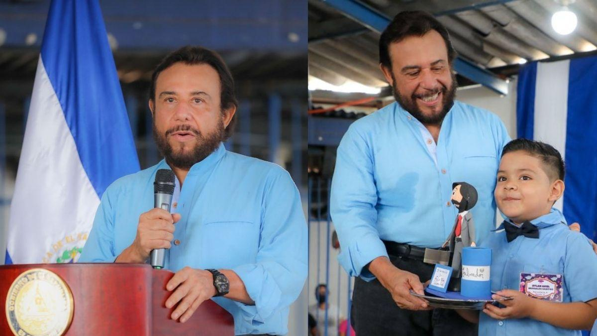
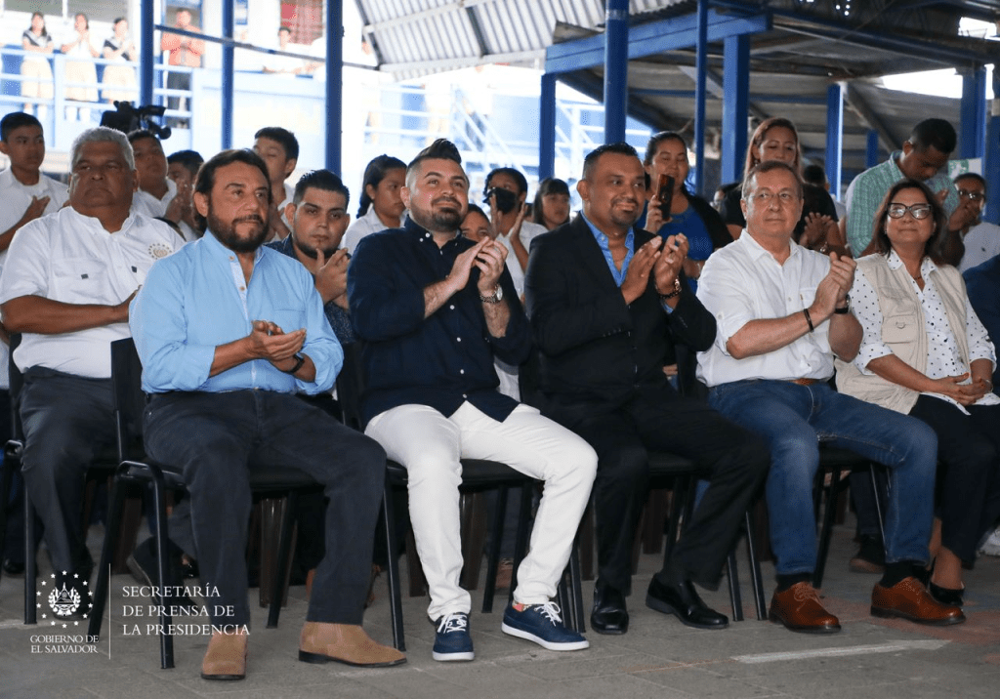

Este centro educativo está ubicado en una zona anteriormente dominada por grupos de pandillas. Durante su visita, el vicepresidente Ulloa remarcó que la recuperación de estos territorios es un mensaje claro contra las pandillas y certifica la efectividad en las estrategias implementadas por el actual gobierno para combatir la violencia y la delincuencia en El Salvador.
«Hemos venido a este centro escolar no por casualidad, ni por coincidencia, sino por la decisión de enviar un mensaje desde este lugar. Aquí era la frontera invisible donde no se podía cruzar por la acción de grupos criminales y estructuras delincuenciales que agobiaban a esta comunidad», dijo el vicepresidente.
«Pero se ha restablecido la paz y la armonía en esta y en muchísimas comunidades, donde hace menos de dos años, no se podía transitar. Pero desde que el presidente Bukele declaró la guerra contra las pandillas y comenzamos a implementar el Plan Control Territorial y el régimen de excepción, la paz y la armonía ha regresado a las comunidades. Hoy estamos enviando un claro mensaje», añadió.
El vicemandatario también remarcó que «ahora que las comunidades están libres de las amenazas de las pandillas vuelven a resurgir». «Muchos maestros dieron sus vidas por defender a sus alumnos. Y estos maestros no tenían el respaldo de un Estado funcional. Se acabó el tiempo en que los jóvenes no podían cruzar una calle por riesgo a ser atacados».
«Hemos venido a este centro escolar no por casualidad, ni por coincidencia, sino por la decisión de enviar un mensaje desde este lugar. Aquí era la frontera invisible donde no se podía cruzar por la acción de grupos criminales y estructuras delincuenciales que agobiaban a esta comunidad», dijo el vicepresidente.
«Pero se ha restablecido la paz y la armonía en esta y en muchísimas comunidades, donde hace menos de dos años, no se podía transitar. Pero desde que el presidente Bukele declaró la guerra contra las pandillas y comenzamos a implementar el Plan Control Territorial y el régimen de excepción, la paz y la armonía ha regresado a las comunidades. Hoy estamos enviando un claro mensaje», añadió.
El vicemandatario también remarcó que «ahora que las comunidades están libres de las amenazas de las pandillas vuelven a resurgir». «Muchos maestros dieron sus vidas por defender a sus alumnos. Y estos maestros no tenían el respaldo de un Estado funcional. Se acabó el tiempo en que los jóvenes no podían cruzar una calle por riesgo a ser atacados».

volver a inicio